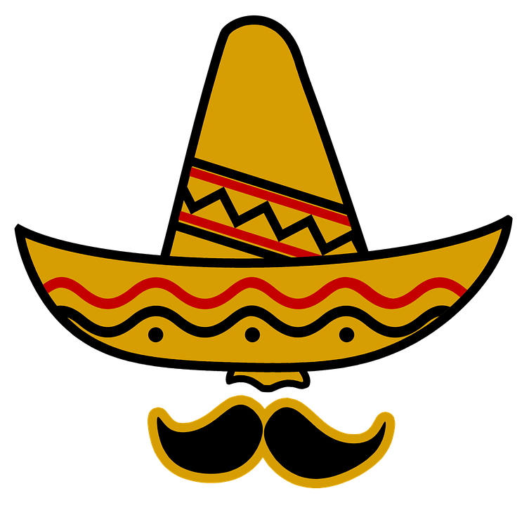

En México, existe una gran variedad de dulces típicos que varían de una región a otra, muchos de ellos son elaborados artesanalmente y son emblemáticos de la cultura mexicana. Con la llegada de los españoles, la cultura indígena se mezcló con nuevas costumbres, tradiciones y sabores. Muestra de ello es la comida mexicana, la cual es considerada una de las más variadas y ricas del mundo. La elaboración de los dulces tradicionales mexicanos forma parte de esta gran riqueza culinaria.
La confitería nace como una ciencia, donde los principios de la alquimia adquirieron un papel importantísimo; un arte, donde el azúcar se usaba para crear las más caprichosas formas arquitectónicas, pictóricas y escultóricas; sápidas, aromáticas y sabrosas.
En México los niños juegan y consumen ciertas hormigas llamadas meleras, que tienen una bolsita llena de miel y se conocen en náhuatl como necuazcatl, también consideradas sagradas por las antiguas culturas mesoamericanas.
Actualmente, los indígenas clasifican a esas hormigas por el sabor de su miel y lo asocian con su color. Cuanto más oscura es más dulce. La de color café se le llama hormiga coca cola, a la amarilla, más acidita, se le conoce por hormiga mantequilla, y cuando su color es intermedio se le dice simplemente hormiga dulce.
Desde 1528 se inició el “paseo del pendón”, un desfile conmemorativo del 13 de agosto, día en que se rindió Cuauhtémoc. Se obsequiaban dulces y se echaban confites; en los albores de la capital de la Nueva España, apareció un confitero español llamado Francisco de Ledesma, quien con una negrita liberta llamada Barbola, elaboraba conservas, alfeñiques y mazapanes de influencia árabe, además de ciertos dulces llamados confites especiales para las celebraciones, pues servían para arrojarlos al pueblo en forma alegre y jovial durante el desfile; rara vez faltaron estos dulces, pero hubo casos extremos que cuando faltaron los confites, fueron sustituidos por los confetis de papel.

|
SweetsBigotes |
 |